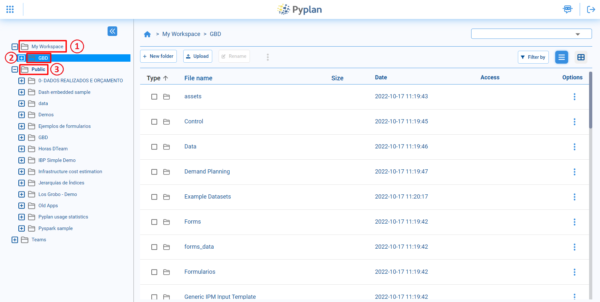
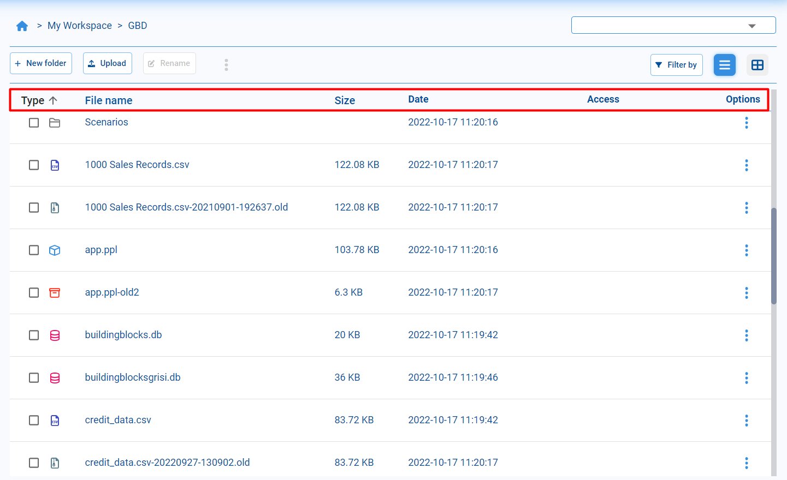
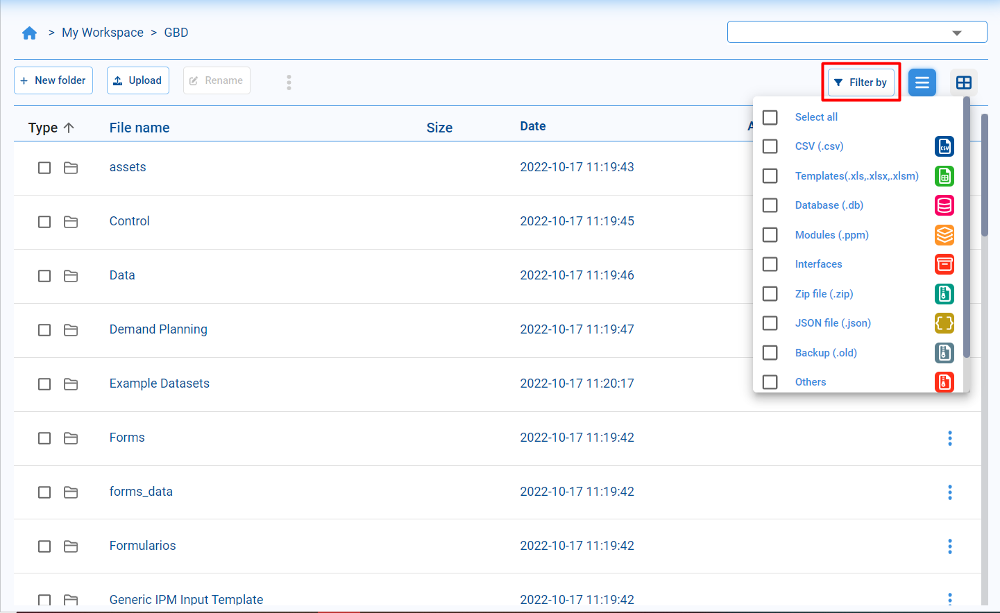

File Manager
Contents
File Manager#
Pyplan’s file manager is designed to easily and transparently manage files, folders and applications, which can be displayed in a hierarchical tree based on their directory structure. It allows us to sort into folders and subfolders, rename, copy, move, delete and search for files.
My Workspace: Personal folder where all the user’s applications can be stored.
Selected folder: Selected folder that we can browse in the right part of the file manager.
Company public folder: Folder containing the applications available to all company users.
Views#
The default view of the explorer shows us the files in list format, with different data for each file or folder. More specifically, the file type, name, size and date of last modification.
In addition to the explorer view as a list of files, by default, we have the mosaic view available. In this view we can first see the folders and then the tiles that represent the files with the corresponding icon for each type of file.

Open applications#
From the file manager, we can identify the applications by the icon that appears to the right of the name. When selecting a folder corresponding to an application, a button with the option Open app will appear in the top menu, alternatively it will also be available in the contextual menu.

Filter and search#
To make it easier to navigate between files, we have the option to filter by data type. This will allow us to see only the files with the specified data types
It is also possible to use the search engine to find files or folders. Entering a partial text will retrieve all files that contain the corresponding text in their name.
Create folders and rename files#
To organize our files we have the option to create new folders. For this we must locate in the directory where we want to create the folder and we must select the option New folder, a window will open where we will be able to choose the name of the new folder. When confirming the name, the folder will appear in the directory.

We also have the possibility to rename folders and files. We must select the file/folder we want to rename and click on the Rename option. Once this is done, an editing window will be enabled, once we change the name, we confirm the changes by checking the confirmation option.

Copy and move#
As in any file manager, we will be able to copy and move files between the different folders. To do this we have the options copy and move in the context menu |ellipsis| when selecting a file or folder in the directory.

To copy or move several files you can select them and then from the |ellipsis| menu at the top look for the copy or move options as needed.

Once we have selected the copy or move option, we can use the browser to go to the location where we want to paste the file. Then we must click on the paste here option to paste the file or folder in the current location.
Tip
Another way to manipulate files is to use the commands Ctrl + C (copy), Ctrl + X (move) and Ctrl + V (paste).
Duplicate and delete#
The Duplicate option allows us to create a copy of the file or folder within the same directory.
Once this option is selected, a copy of the selected file or folder will appear in the directory, and will be named with the prefix Copy of … followed by the name of the original file.
When we need to delete some element of the directory, we will be able to do it from the Delete option of the contextual menu.
Upload and download#
To upload files from the computer, we must access the Upload option, where a window will open where we will be able to drag or select from our computer the files to be uploaded.

To download files and/or folders from Pyplan we have to select them, in the contextual menu select Download and it will automatically start downloading the selected items in a zip file format.
Compress and decompress#
In case we need it, we have the possibility to compress files inside the Pyplan directory. To do this we select the files we want to compress and click on Zip it, then the compressed file will be created inside the directory.
In case you want to decompress a zip file, you must select the zip format file and the Unzip button will appear at the top of the directory to decompress it.